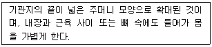
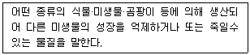

축산산업기사 (2013-03-10 기출문제)
1과목: 가축번식 육종학
1. 닭 능력의 개량목적에 따라 채란성과 산육성의 개량 대상형질로 구분할 때 산육능력의 개량에 관계하는 형질인 것은?
- 산란강도
- 취소성
- 체형
- 동기휴산성
(정답률: 68%)

2. 돼지에 있어서 근친교배를 시킬 경우는 어떤 현상이 나타나는가?
- 번식능률이 우수해진다.
- 성장률이 좋아진다.
- 자손의 능력이 향상된다.
- 산자수가 적어진다.
(정답률: 82%)
3. 성선 호르몬에 대한 설명 중 옳지 않은 것은?
- 뇌하수체 전엽에서 분비된다.
- 모두 스테로이드 핵을 가지고 있다.
- 종류로는 androgen, estrogen, progesterone이 있다.
- 제 2차 성징을 발현시키고 임신유지에 중요한 역할을 한다.
(정답률: 62%)
4. 수정란의 분화과정에서 신경계가 발생되는 부위는?
- 외배엽
- 중배엽
- 내배엽
- 투명대
(정답률: 69%)
5. 돼지의 일반적인 번식 적령기로 가장 적합한 것은?
- 5~8개월
- 9~12개월
- 13~16개월
- 17~20개월
(정답률: 66%)
6. 젖소의 근친교배 방지방안으로 적합한 것은?
- 종부나 인공수정에 이용할 수소는 암소와 혈연관계가 가까운 것으로 선택한다.
- 종부에 사용할 종모우는 최소 두수로 유지하여 너무 많지 않게 한다.
- 특정지역에서 이용하는 종모우는 상호 혈연관계가 가까운 것을 이용한다.
- 특정지역 젖소의 근친교배 방지를 위해 종모우를 교환하여 이용한다.
(정답률: 81%)
7. 고기소의 개량대상이 되는 주요 형질이 아닌 것은?
- 번식능률
- 이유 후 증체율
- 도체의 품질
- 유지율
(정답률: 74%)
8. 가축의 고환이 하나 또는 둘 모두가 음낭 내로 하강하지 못하고 복강 내에 남아 있어서 생기는 번식장애는?
- 프리마틴
- 잠복정소
- 음낭 헤르니아
- 백생 처녀우병
(정답률: 73%)
9. 닭의 체중과 가장 밀접한 상관관계를 가지는 형질은?
- 정강이 길이
- 생존율
- 산란율
- 사료효율
(정답률: 79%)
10. 근친교배가 유익하게 이용될 수 있는 경우로 적합하지 않은 것은?
- 유전자를 고정하고자 할 때
- 불량한 열성유전자를 제거하고자 할 때
- 혈연관계가 높은 자손을 생산하고자 할 때
- 이형 접합체를 증가시키고자 할 때
(정답률: 78%)
11. 번식장애의 원인이 되는 것은?
- 고장증
- 간장염
- 자궁내막염
- 심막염
(정답률: 83%)
12. 일반적으로 유전력이 높은 형질에 대해 가장 효과적인 선발방법은?
- 자신의 능력에 의한 선발
- 가계 능력에 의한 선발
- 조모의 능력에 의한 선발
- 반형매의 능력에 의한 선발
(정답률: 66%)
13. 돼지의 임신진단 방법으로 활용되는 초음파진단법에 대한 설명으로 옳은 것은?
- 질점막을 시료로 사용한다.
- 임신 100일령 이후부터 임진진단이 가능하다.
- 혈구응집반응 억제 검사 혹은 PMSG 생물학적 검사를 한다.
- 비교적 신속 정확하게 임신을 진단할 수 있는 장점이 있다.
(정답률: 80%)
14. 선발의 기능에 대한 설명과 거리가 먼 것은?
- 유전자 빈도의 변화
- 유전자형 빈도의 변화
- 새로운 유전자의 창조
- 축군의 유전적 조성의 변화
(정답률: 83%)
15. 가축의 발정전기에 일어나는 증상이 아닌 것은?
- 난소의 황체 조직이 퇴화된다.
- 난포의 발육과 난포액이 충만 해진다.
- 자궁과 난관의 연동 운동이 일어나 난자와 정자의 수송을 돕는다.
- 웅축을 허용하지 않는다.
(정답률: 61%)
16. 배란 후 난자의 수정능력과 보유시간에 대한 설명 중 맞지 않는 것은?
- 자성생식기도관 내에서 난자의 수정능력 보유시간은 정자의 수정능력 보유시간보다 길다.
- 난자는 대개의 경우 배란 후 12~24시간 정도 수정능력을 유지한다.
- 인공수정의 시간이 늦을 경우 난자는 그 수정능력 보유말기에 수정되기 때문에 수정란이 착상되지 못할 수 있다.
- 난자가 노화되면 유선, 배아흡수 및 이상발생 등이 일어날 수 있다.
(정답률: 72%)
17. 소, 돼지, 면양 등에 있어서 성성숙을 지연시키는 것은?
- 누진교배
- 근친교배
- 잡종교배
- 이계교배
(정답률: 83%)
18. 돼지의 교배적기는 수퇘지를 허용하기 시작한 시점으로부터 대략 몇 시간 동안인가?
- 1~5시간
- 6~9시간
- 10~25.5시간
- 27~31시간
(정답률: 77%)
19. 산유기록의 통계적 보정에 대한 설명으로 틀린 것은?
- 암소의 연령에 따라 보정을 실시한다.
- 1일 착유횟수에 따라 보정을 실시한다.
- 착유일수가 다름에 따라 보정을 실시한다.
- 산유기간은 365일 기준으로 하여 보정을 실시한다.
(정답률: 72%)
20. 후손의 능력에 기준을 두는 선발방법으로 젖소에서 많이 이용하는 방법은?
- 혈통선발
- 개체선발
- 후대검정
- 가계내선발
(정답률: 78%)
2과목: 가축사양학
21. 홀스타인 젖소가 일일 우유 30kg을 생산시 필요로 하는 칼슘 요구량은 약 얼마인가?
- 35g
- 65g
- 95g
- 120g
(정답률: 48%)
22. 메틸(Methyl)기를 제공하는 항 지방간 물질의 비타민은?
- 엽산(Folic acid)
- 콜린(Choline)
- 피리독신(Pyridoxine)
- 판토텐산(Pantothenic acid)
(정답률: 70%)
23. 유지율 4%의 우유 1kg의 에너지는 750kcal이고, 에너지 이용효율이 69.3%라고 하면 유효에너지(kcal)는?
- 982
- 1082
- 1182
- 1283
(정답률: 57%)
24. 다음은 닭의 기관 중 어떤 기관에 대한 설명인가?

- 폐
- 명관
- 기낭
- 인두
(정답률: 83%)
25. 필수아미노산인 트립토판(Tryptophan)으로부터 전환 될수 있는 비타민은?
- 나이아신(Niacin)
- 티아민(Thiamine)
- 리보플라빈(Riboflavin)
- 바이오틴(Biotin)
(정답률: 58%)
26. 필수아미노산 계수를 산출한 것 중 기준이 되는 계란의 계수는?
- 100
- 90
- 85
- 80
(정답률: 62%)
27. 닭의 인공수정 시 정액을 희석해서 주입하는데 원정액과 같은 수준의 수정율을 얻기 위해서는 적어도 주입정자수가 얼마 정도 필요한가?
- 0.5~1.0억
- 1.5~2.0억
- 2.5~3.0억
- 3.5억~5.0억
(정답률: 64%)
28. 성장중인 반추도물의 단백질 요구량을 결정하는 요인이 아닌 것은?
- 분뇨로 없어지는 질소량
- 체중별 증체량에 대한 축적
- 사료 중에 함유된 질소의 생물가
- 아미노산 화학적 등급
(정답률: 75%)
29. 지방의 불포화도를 판단하는 기준은?
- 전분가
- 검화가
- 요오드가
- Reichert – Meissl가
(정답률: 73%)
30. 비욱중인 돼지의 체지방을 적게 하면서 증체속도를 빠르게 하기 위한 알맞은 사양관리 요령은?
- 생체중 50kg을 전후로 전기에는 저영양, 중기에는 고영양으로 사양관리 한다.
- 생체중 50kg을 전후로 전기에는 고영양, 중기에는 저영양으로 사양관리 한다.
- 이유후부터 출하까지 저영양으로 사양관리 한다.
- 이유후부터 출하까지 고영양으로 사양관리 한다.
(정답률: 65%)
31. 가축의 유지사양시 가장 우선적으로 필요한 요소는?
- 단백질
- 무기질
- 비타민
- 에너지
(정답률: 64%)
32. 다음의 화본과 건초 중 추위에 견디는 힘이 강하고 품질이 우수한 건초는?
- 오차드그라스(Orchardgrass)
- 티머시(Timothy)
- 톨페스큐(Tall fascue)
- 리드카나리그라스(Reed canarygrass)
(정답률: 60%)
33. 사료의 분류법으로서 적당하지 않은 것은?
- 영양가에 의한 분류
- 유통여부에 의한 분류
- 화학적 구조에 의한 분류
- 배합상태에 의한 분류
(정답률: 59%)
34. 다음 영양소 중 단위당 열량가가 가장 높은 영양소는?
- 탄수화물
- 단백질
- 지방
- 전분
(정답률: 70%)
35. 백색 경지방을 생산하는 사료는?(오류 신고가 접수된 문제입니다. 반드시 정답과 해설을 확인하시기 바랍니다.)
- 옥수수겨
- 쌀겨
- 밀기울
- 보릿겨
(정답률: 50%)
36. 돼지의 위에서 분비되는 소화액에 함유되어 있지 않는 물질은?
- 탄산수소나트륨(NaHCO3)
- 염산(HCl)
- 펩신(Pepsin)
- 레닌(Rennin)
(정답률: 67%)
37. 단위(單胃)가축에서 분비되지 않는 탄수화물 소화효소는?
- 아밀라아제(amylase)
- 말타아제(maltase)
- 수크라아제(sucrase)
- 셀룰라아제(cellulase)
(정답률: 73%)
38. 보조영양소의 효과는 가축의 종류에 따라 차이가 있지만 작용형식이나 효과에 따라 사용할 수 있다. 다음이 설명하는 것은?

- 향균제
- 항미생물제
- 생산증진제
- 항생제
(정답률: 64%)
39. 다음 임신한 가축의 태아발달에 관한 설명으로 옳은 것은?
- 임신 전체 기간 동안 비슷한 발육 양태를 유지한다.
- 임신초기에 빠르게 발달하고 중기 이후에는 둔화된다.
- 임신중반기까지 완만하며 임신말기에 빠르게 진행된다.
- 임신초기에 느리게 발달하고 중기 이후에는 빠르게 된다.
(정답률: 71%)
40. 병아리 사료로서 가장 중요한 영양소는?
- 탄수화물
- 지방
- 무기물
- 단백질
(정답률: 71%)
3과목: 축산경영학
41. 축산경영에서는 토지면적보다는 가축수에 따라서 그 규모가 결정되는 것이 일반적이다. 이는 축산경영의 어떠한 특징을 설명한 것인가?
- 2차 생산의 성격
- 간접적 토지관계
- 생산물의 저장 증진
- 물량감소와 가치증대의 성격
(정답률: 71%)
42. 다음 중 “Corn – hog cycle”을 가장 잘 설명한 것은?
- 곡물가격이 상승하면 가축가격은 상승하고, 곡물가격이 하락시는 가축가격도 하락한다.
- 곡물가격이 상승하면 가축가격은 하락하고, 곡물가격이 하락시는 가축가격은 상승한다.
- 공산물 가격이 상승하면 농산물가격도 상승하고, 공산물 가격이 하락하면 농산물 가격도 하락한다.
- 공산물 가격이 상승하면 농산물가격은 하락하고, 공산물 가격이 하락하면 농산물 가격도 상승한다.
(정답률: 62%)
43. 다음 중 복합경영의 가장 큰 장점으로 볼 수 있는 것은?
- 경영의 위험을 분산시킬 수 있다.
- 노동의 숙력도를 향상시킬 수 있다.
- 대량 판매의 유리성을 기대할 수 있다.
- 생산비의 저하로 시장경쟁력이 증대 된다.
(정답률: 69%)
44. 다음 중 결합생산물(結合生産物)이 아닌 것은?
- 산란계와 달걀
- 쇠고기와 소가죽
- 양고기와 양모
- 쇠고기와 돼지고기
(정답률: 77%)
45. 다음 중 투자분석에 관한 설명으로 틀린 것은?
- 회수기간이 짧은 투자일수록 투자의 가치가 있다.
- 잔존가치는 투자의 내용연수가 끝나고 남는 투자자산의 가치로서 0일수도 있다.
- 비용편익비율(B/C Ratio)이 0보다 크면 투자에 따른 손익의 순현재가치(NPV)가 반드시 1보다 크다.
- 자금의 조달금리가 연리 10%인 자금을 투자하여 예상되는 수익의 내부수익률(IRR)이 0.07이라면 투자해서는 안 된다.
(정답률: 59%)
46. 다음 중 경영비에 속하는 항목은?
- 가족노동비
- 자기자본이자
- 자기토지지대
- 물재비
(정답률: 70%)
47. 다음 중 손익계산서 등식으로 옳은 것은?
- 총비용 – 총수익 = 순손실
- 매출총이익 + 일반관리비 = 영업이익
- 총이익 – 사업외비용 = 순이익
- 매출액 + 매출원가 = 매출총이익
(정답률: 50%)
48. 취득원가 1.000.000원, 잔존율 10%, 내용년수 5년인 기계에 제 1차년도 감가상각액(정액법)은 얼마인가?
- 15만원
- 16만원
- 17만원
- 18만원
(정답률: 73%)
49. 다음 중 축산경영 규모의 척도로 볼 수 없는 것은?
- 경영자 연령
- 가축사육 두수
- 사료작물 재배면적
- 고정자본 투자액
(정답률: 79%)
50. 다음 중 축산의 경영진단시 비교분석 기준이 아닌 것은?
- 표준적인 진단기준과의 비교
- 자기경영성과의 년차간 비교
- 서로 다른 경영유형간의 성과 비교
- 해당 지역의 유사한 경영체와의 성과 비교
(정답률: 71%)
51. 다음 중 축산농가의 경영목적이 순이익(이윤)을 극대화하는데 있다면 생산 수준의 결정은?
- 한계수익과 한계비용이 같을 때
- 평균수익과 평균비용이 같을 때
- 한계수익이 한계비용보다 많을 때
- 한계수익이 한계비용보다 적을 때
(정답률: 70%)
52. 다음 중 축산경영자로서 경영체를 운영하는데 중요시 할 사항과 거리가 먼 것은?
- 확고한 경영조직체이어야 한다.
- 경영에 대한 일정한 목표를 가져야 한다.
- 상황에 적절한 임기응변적인 조치가 필요하다.
- 가축사육에 대한 기술적인 면만을 필요로 한다.
(정답률: 78%)
53. 다음 중 가족노동 중심의 소규모 축산경영의 목푝와 가장 거리가 먼 것은?
- 자가노동보수의 최대화
- 자기자본에 대한 이자의 최대화
- 자기소유의 토지에 대한 지대의 최대화
- 차입한 토지에 대한 지대수익의 최대화
(정답률: 67%)
54. 다음 중 축산경영의 공동조직(共同組織)과 관련된 설명으로 옳지 않은 것은?
- 번식∙육성센터의 운영은 공독조직화의 좋은 사례이다.
- 경영의 공동조직화는 농가의 주체성이 보장되어야 한다.
- 목초지나 방목장 등의 토지를 공용이용하는 조직은 축산경영의 공동조직이라 할 수 없다.
- 규모의 영세성으로 인한 다양한 제약 요인들을 극복하기 위해서는 경영 공동조직화를 꾀할 필요가 있다.
(정답률: 78%)
55. 난사비가 6이고, 사료 1kg당의 가격이 250원일 때 계란 1kg의 가격은 얼마인가?
- 1000원
- 1250월
- 1500원
- 1750원
(정답률: 73%)
56. 다음 중 축산물 유통마진의 항목에 포함되지 않는 것은?
- 가축비
- 수송비
- 저장비
- 수수료
(정답률: 69%)
57. 다음 중 대차대조표의 구성 요소로만 나열된 것은?
- 자산∙부채∙자본
- 자본∙토지∙손익
- 자산∙수익∙자본
- 자산∙부채∙가축
(정답률: 72%)
58. 다음 중 생산함수의 생산영역에 대한 설명으로 틀린 것은?
- 최적생산 구역은 제3영역에서 발생하지 않는다.
- 생산함수의 제2영역에서는 생산 투입을 중단한다.
- 생산함수의 제1영역에서는 무조건 생산투입을 증가시킨다.
- 점2영역은 평균생산이 최고인 점에서 총생산이 최고인점 사이이다.
(정답률: 55%)
59. 다음 중 양계의 수익성을 극대화하기 위한 방안으로 가장 적절하지 않은 것은?
- 생산능력의 향상
- 사료의 요구율을 높임
- 적정밀도의 사육과 회전수
- 육성율과 품질 및 상품가치의 균일성
(정답률: 74%)
60. A양돈비육농가가 자돈을 30kg에 구입하여 106일동안 사육한 후 체중이 110kg일 때 출하하였다. 이 기간 동안 비육돈 두당 사료섭취량은 228kg이었다. 이 농가의 사료요구율은 얼마인가?
- 2.07
- 2.85
- 3.67
- 7.60
(정답률: 70%)
4과목: 사료작물학
61. 산성토양의 중화에 사용되는 것은?
- 질소
- 인산
- 칼륨
- 석회
(정답률: 75%)
62. 답리작으로 수확량이 가장 높은 사료작물은?
- 이탈리안 라이그라스
- 오차드그라스
- 청예호밀
- 청예연맥(귀리)
(정답률: 60%)
63. 보통 사일리지 재료의 가장 적당한 수분 함량은?
- 20 ~ 28%
- 40 ~ 45%
- 68 ~ 72%
- 80 ~ 85%
(정답률: 75%)
64. 다음 중 경운초지 조성시의 작업순서가 바르게 된 것은?
- 장해물제거 → 시비 → 경운 → 진압 → 파종 → 정지 → 복토
- 장해물제거 → 경운 → 정지 → 시비 → 파종 → 복토 → 진압
- 경운 → 정기 → 시비 → 장해물제거 → 파종 → 복토 → 진압
- 정지 → 장해물제거 → 시비 → 경운 → 파종 → 진압 → 복토
(정답률: 69%)
65. 헤일리지(haylage)의 수분 함유량은?
- 30 ~ 40%
- 40 ~ 60%
- 60 ~ 70%
- 70 ~ 80%
(정답률: 62%)
66. 다음 콩과목초 중 기호성이 높고, 질이 좋은 것은?
- 알팔파
- 스위트 클로버
- 크림슨 클로버
- 레드 클로버
(정답률: 82%)
67. 다음 중 산성 토양지에 가장 강한 사료작물은?
- 수단그라스
- 화이트 클로버
- 알팔파
- 스위트 클로버
(정답률: 56%)
68. 중부 평야지대에서 사일리지(silage)용 옥수수의 파종적기는?
- 4월 10일 ~ 5월 10일
- 5월 20일 ~ 6월 10일
- 6월 20일 ~ 7월 10일
- 7월 20일 ~ 8월 10일
(정답률: 64%)
69. 건초의 품질은 재료의 종류, 목초의 성숙도, 조제방법 등에 따라 달라지며, 가축생산성과 밀접한 연관이 있다. 다음 중 건초의 평가기준과 거리가 먼 것은?
- 녹색도와 곰팡이 발생여부
- 잎의 비율과 순도
- 건초의 제조방법
- 향기와 촉감
(정답률: 69%)
70. 건초의 장기저장을 위해 저장성과 현실성(경제성)을 고려할 때 가장 적당한 수분 함량은?
- 1 ~ 5%
- 10 ~ 18%
- 20 ~ 25%
- 28 ~ 35%
(정답률: 69%)
71. 식물체 내에서 탄수화물과 단백질의 축적에 필요하며, 목초의 월동전 추비로서 필요한 2가지 비료는?
- 질소와 칼리
- 질소와 인산
- 질소와 붕산
- 질소와 마그네슘
(정답률: 57%)
72. 수수 × 수단그라스의 건물수량이 2700kg이고, 청초의 수분함량이 85%일 때 청초수량은?
- 15000kg
- 16000kg
- 18000kg
- 20000kg
(정답률: 64%)
73. 파종 후에 초기생육이 가장 빠른 목초는?
- 레드톱
- 오차드 그라스
- 켄터키 블루그라스
- 이탈리안 라이그라스
(정답률: 64%)
74. 사일리지용 옥수수 재배에서 작업효율을 고려할 때 가장 적합한 추비의 사용 시기는?
- 3 ~ 4엽
- 5 ~ 6엽
- 7 ~ 8엽
- 10 ~ 12엽
(정답률: 61%)
75. 답리작으로 풋베기(청예) 호밀을 재배할 때의 ha당 파종적량은?
- 60 ~ 100kg
- 130 ~ 180kg
- 260 ~ 300kg
- 360 ~ 400kg
(정답률: 62%)
76. 초지토양의 선정기준 중 경운초지에 관한 설명이 틀린 것은?
- 경사는 30% 이하이다.
- 유효토심은 20cm 정도이다.
- 토성은 사양질, 식양질이다.
- 지형은 평탄, 구름, 단구, 대지이다.
(정답률: 46%)
77. 다음 목초의 채초이용 적기 설명으로 옳지 않는 것은?
- 화본과 목초는 출수전기이다.
- 두고 목초는 개화초기이다.
- 혼파 초지는 두과에 준한다.
- 수량, 품질과 재생을 고려한 다음 예취한다.
(정답률: 66%)
78. 두과 목초류에 관한 설명으로 잘못된 것은?
- 종자는 일반적으로 배젖이 없고 종자의 저장 영양분은 2개의 떡잎에 들어있다.
- 잎은 2 ~ 3개의 작은 잎을 가진 복합엽으로 되어 있다.
- 접종된 목초의 뿌리에는 질소고정을 할 수 있는 근류균을 갖는다.
- 꽃은 1 ~ 3개의 수술, 2개의 인피 및 암술로 되어 있다.
(정답률: 58%)
79. 요수량이 제일 많은 사료작물인 것은?
- 수단그라스
- 귀리
- 브롬그라스
- 옥수수
(정답률: 47%)
80. 다음 목초 중 추위에 가장 강한 초종은?
- 크림슨 클로버
- 티모시
- 오차드그라스
- 스위트클로버
(정답률: 72%)